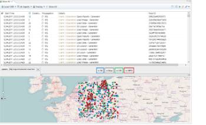

The Back End is Only One Part of the Picture: Mobile-Aware Application Performance Monitoring and Problem Diagnosis


Venue. VALUETOOLS (2017)
Abstract. The success of modern businesses relies on the quality of their supporting application systems. Continuous application performance management is mandatory to enable efficient problem detection, diagnosis, and resolution during production. In today's age of ubiquitous computing, large fractions of users access application systems from mobile devices, such as phones and tablets. For detecting, diagnosing, and resolving performance and availability problems, an end-to-end view, i.e., traceability of requests starting on the (mobile) clients' devices, is becoming increasingly important. In this paper, we propose an approach for end-to-end monitoring of applications from the users' mobile devices to the back end, and diagnosing root-causes of detected performance problems. We extend our previous work on diagnosing performance anti-patterns from execution traces by new metrics and rules. The evaluation of this work shows that our approach successfully detects and diagnoses performance anti-patterns in applications with iOS-based mobile clients. While there are threats to validity to our experiment, our research is a promising starting point for future work.
Link to this page: